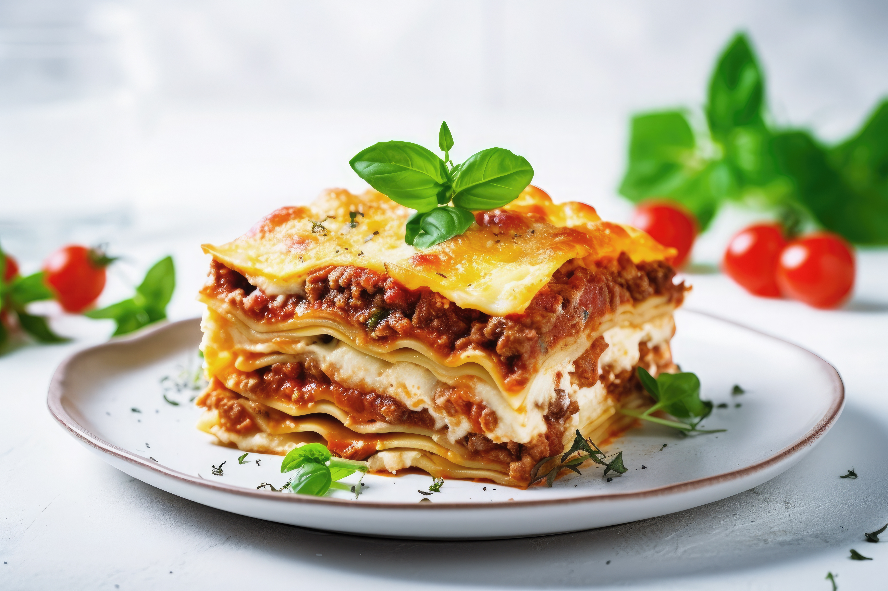

Lasagna

Origin of Lasagna Dish
Lasagna is a classic Italian dish believed to have originated in the region of Emilia-Romagna, Italy. Its name comes from the Greek word "Laganon", one of the earliest forms of pasta made from layers of dough. The modern version of lasagna as we know it--layered sheets of pasta with rich ragu (meat sauce), creamy bechamel, and cheese, especially Parmigiano-Reggiano--developed in Italy during the Middle Ages. Traditionally baked until bubbly and golden, lasagna is now a beloved comfort food around the world, with countless variations including vegetarian, seafood, and even dessert versions. It's known for its hearty, layered goodness and bold Italian flavors.
Ingredients
- Lasagna noodles (pre-cooked or oven-ready)
- Ground beef or Italian sausage
- Onion
- Tomato sauce or marinara sauce
- Tomato paste
- Olive oil
- Ricotta cheese
- Mozzarella cheese (shredded)
- Parmesan cheese (grated)
- Egg (to mix with ricotta)
- Fresh or dried basil and oregano
- Salt and black pepper
Steps
- Cook the meat: In a pan, saute chopped onions and garlic in olive oil, then add ground beef or sausage and cook until browned.
- Make the sauce: Add tomato sauce, tomato paste, herbs, salt, and pepper to the meat. Simmer for 15-20 minutes.
- Mix the ricotta filling: In a bowl, combine ricotta cheese, egg, and a bit of salt and pepper.
- Preheat the oven: Set to 180 degrees celsius (350 degrees Fahrenheit)
- Assemble the layers: In a baking dish, layer sauce, noodles, ricotta mixture, and shredded mozarella. Repeat layers and top with Parmesan.
- Bake: Cover with foil and bake for 25-30 minutes. Uncover the bake and extra 10 minutes until cheese is golden.
- Cool and serve: Let it rest for 10 minutes before slicing and serving.